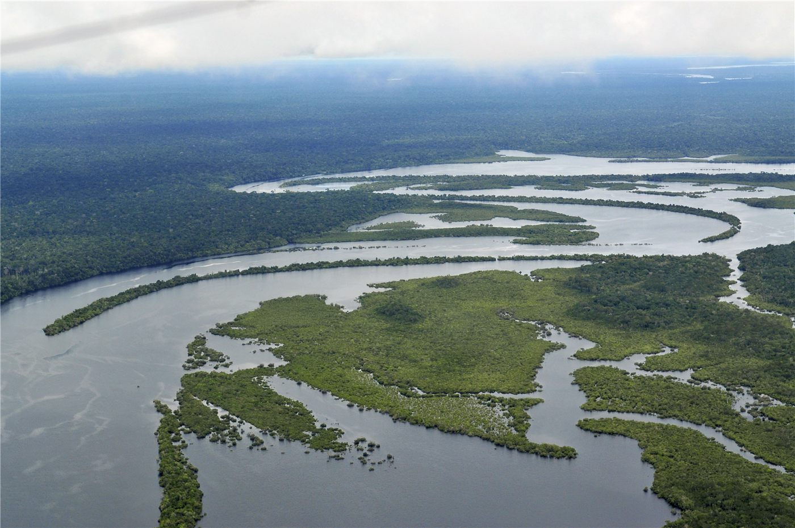

브라질 5월 아마존 벌채 감소… 룰라 '미국 주장 반박', 환경 성과 부각
브라질 국립우주연구소(Inpe)의 새 자료에서 5월 아마존 벌채가 감소한 것으로 나타났다. 룰라 대통령은 이를 근거로 '브라질이 불법 벌채를 막지 못한다'는 미국 측 주장을 반박하며 환경 성과를 강조했다.
손기요 기자 · 2026.06.16
橋국제

브라질의 5월 아마존 삼림 벌채가 감소했다고 룰라 대통령이 국립우주연구소(Inpe)의 새 통계를 인용해 밝혔다. 룰라 대통령은 이 수치를 들어 브라질의 환경 정책 성과를 강조했다.
광고 문의 · 300×250이는 정치적 맥락과 맞물려 있다. 룰라 대통령은 '브라질이 불법 삼림 벌채를 효과적으로 막지 못하고 있다'는 최근 미국 측 주장을 정면으로 반박하며, 자료가 그 반대를 보여준다고 주장했다.
아마존은 세계적 탄소 흡수원이자 생물다양성의 보고로, 벌채 추세는 기후 외교의 핵심 지표로 다뤄진다. 브라질 정부는 벌채 감소를 국제 무대에서의 협상력으로 연결하려는 행보를 이어 왔다.
다만 한 달치 위성 자료만으로 장기 추세를 단정하기는 이르다는 지적도 있다. 건기와 우기, 단속 강도에 따라 벌채 면적은 크게 출렁이기 때문에, 연간 누적치를 함께 봐야 한다는 것이다.
환경 성과를 둘러싼 자료 공방은 단순한 통계 싸움이 아니다. 무역·기후·주권이 얽힌 외교의 장에서, 브라질은 '숲을 지킨다'는 서사를 통해 자국의 입지를 다지려 하고 있다.
출처·참고 (사실 확인용 — 본문은 직접 재작성)
· Inpe 등 종합
· 로이터
· Inpe 등 종합
· 로이터